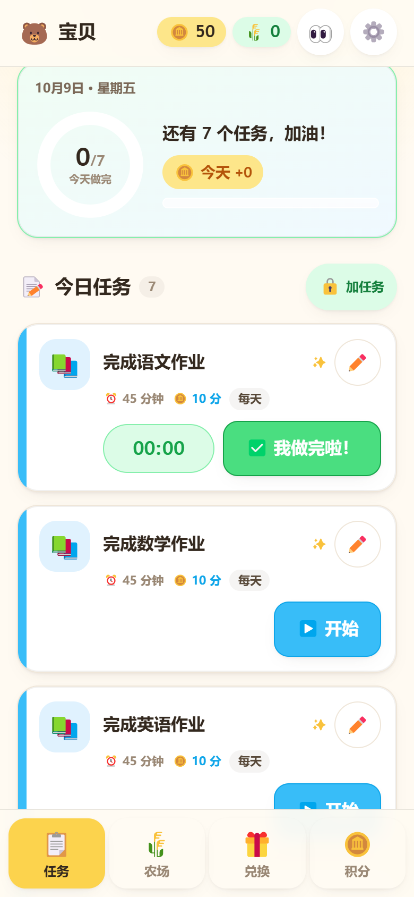
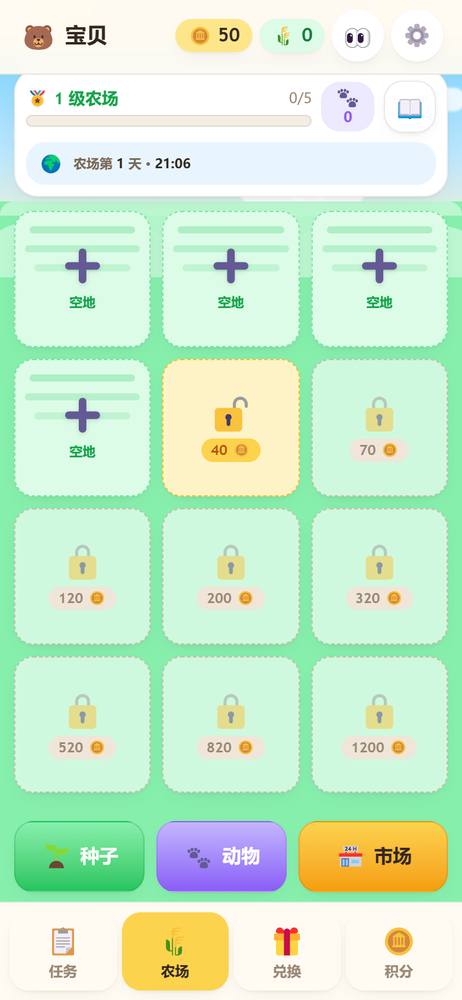
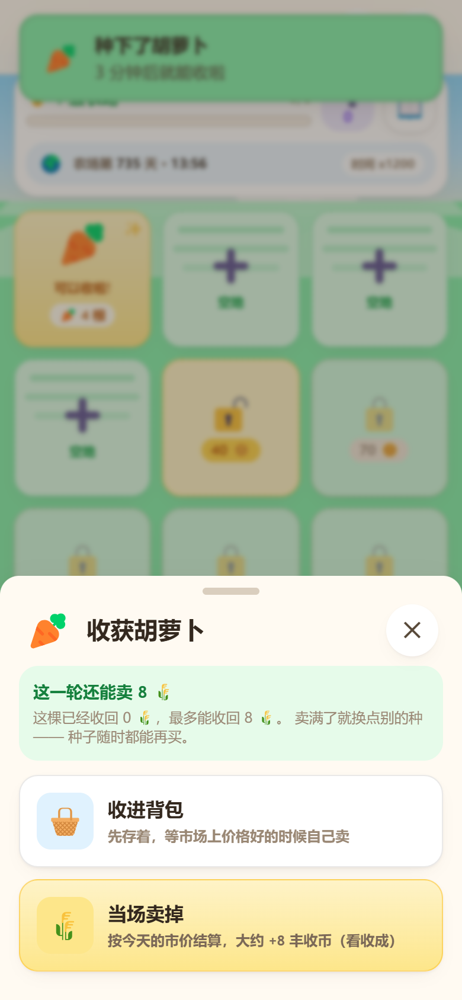
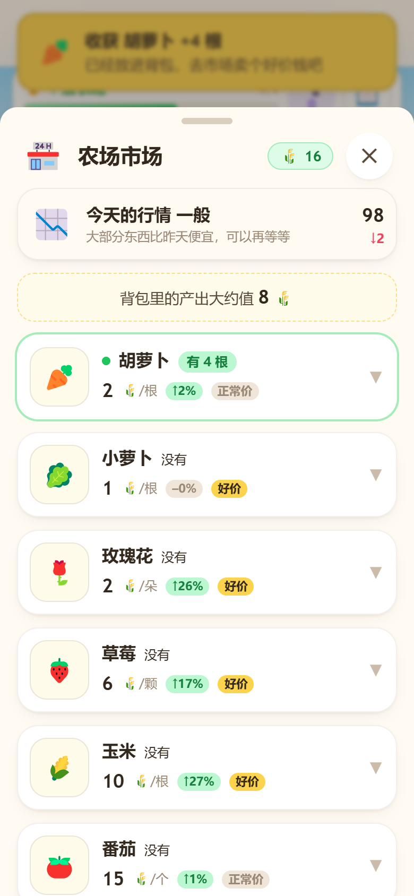
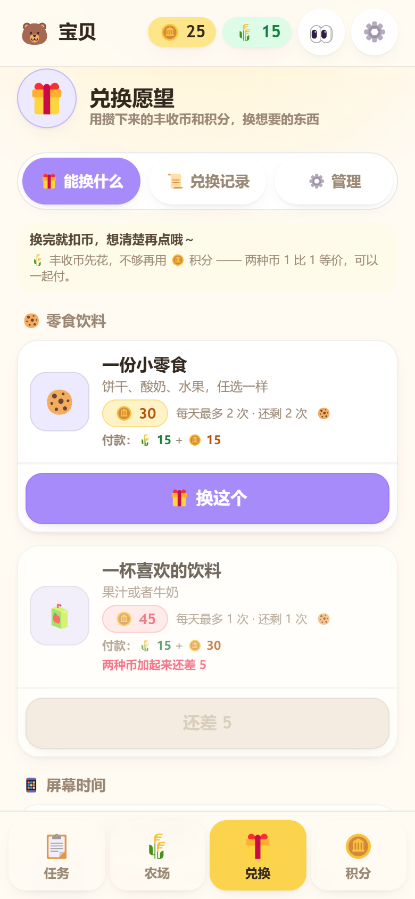
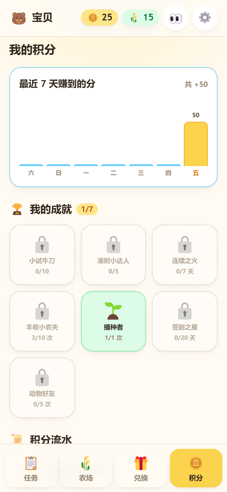
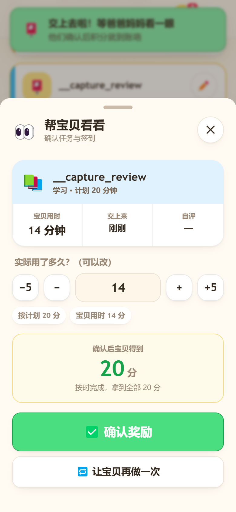

任务与计时
每个任务都可以设一个计划用时。按时完成拿全额积分；超时按比例减少； 超过计划用时一倍，这一轮归零。
- 每天 / 每周 / 每月 / 每年四种周期，到点自动生成，不用手填
- 漏掉的几天可以补上，不会因为忘了一天就清零
- 「一天从几点开始」可以自己设 —— 熬到 1 点做的作业仍算昨天
功能介绍
任务从写下到结算会经过几步，积分再进入农场，变成种子、收成和兑换。下面按这个顺序说。
每个任务都可以设一个计划用时。按时完成拿全额积分；超时按比例减少； 超过计划用时一倍，这一轮归零。
提交完成后有一段加分动画，配合音效和震动。连续完成有连击奖励， 偶尔还会掉贴纸、奖章和宝石，收在背包里。
每一笔积分都有流水，可以查、可以导出。兑换前会显示换完之后还剩多少分。
种子要用积分买。作物和动物按真实时间生长，关掉 App 也在长。收成时可以选择 当场卖掉，或者收进背包等一个更好的价格。
积分怎么算
规则完全公开，家长和孩子都能看懂，没有藏在后台里的系数。
45 分钟的作业，45 分钟内做完 —— 基础分一分不少。
超出计划用时 50%，这一轮拿一半分；超得越多，拿得越少。
45 分钟的作业拖到 90 分钟以上，这一轮就是 0 分。
（「学会一项新本领」这类任务可以勾选「超期不扣分」。）
使用流程
孩子不需要理解背后的规则，只要知道今天做完，农场会有变化。
农场里的取舍
这几件事孩子每天都会遇到，不用大人额外解释。
种子和新的土地都要用积分换。想多种一块，就得先攒一攒。
作物和动物按真实时间生长。收成时要做个选择：当场卖掉， 还是收进背包等一个好价钱。
市场每天更新价格，有涨有跌，也会标出「好价」。同一批胡萝卜， 早卖和晚卖能差出不少。
每次收获都会掷一次骰子，可能丰收，也可能遇上虫灾减产。 动物不会死，只是这一批少收一点。
示意用，实际数值由 App 内的行情引擎按天生成。
界面预览
界面里的天空、草地和地块都是用代码画的，没有位图素材，所以安装包只有 5.5 MB。







给家长
应用是单机的：没有服务端、没有账号、没有统计和广告 SDK。
孩子提交后停在「等爸爸妈妈看」，家长给质量分、微调用时、点确认奖励才入账。 也可以在设置里关掉审核，改成提交即结算。
规则、兑换、数据、审核这些入口都在密码后面，孩子点不进去， 也不能自己给自己加分或改价。
任务、积分、背包、农场全部存在设备本地。可以「导出备份」存成 JSON 文件， 换设备时导入恢复。
参考汇率、音效与震动、是否审核、一天从几点开始、孩子昵称和头像都在设置里； 任务和积分也能自己增删改。
下载与体验
不用注册，也不用付费。想先看看，直接点「在线体验」。
直接下载安装包，装到手机上就是一个独立 App。音效和震动在安卓端最完整， 完全离线可用。
用手机或电脑的浏览器直接打开就能用，数据存在浏览器本地。 手机上可以「添加到主屏幕」，从桌面图标进入。
iOS 版本还在准备中。在那之前，iPhone 上可以先用 Safari 打开网页版。
常见问题
主要面向 6–14 岁，从小学到初中都用得上。这段时间作业、家务、阅读都是日常。
低年级由家长设好任务；高年级可以自己调整任务内容、时长和积分规则。
都不需要。小任务农场是单机应用，所有数据存在你自己的设备上， 不注册、不登录、不联网也能完整使用。飞机上、没 WiFi 的爷爷奶奶家都能照常玩。
不会。应用没有任何服务端，也没有第三方统计和广告 SDK。任务、积分、农场记录 全部保存在本机的浏览器数据库里。
只有你主动点「导出备份」，数据才会变成一个文件交到你手上。
没有广告，也没有任何内购。全部内容（12 块地、8 种作物、5 种动物、 全部任务类型）都在应用内，不需要额外付费解锁。
不会。孩子端只能提交任务、不能自评分数。打开「家长审核」后， 任务会停在「等爸爸妈妈看」，必须由家长输入密码、给出质量分并点确认奖励， 积分才真正入账。
孩子提交前看到的分数一律写着「大约能拿到」——因为质量分还没定。
可以用「导出备份」把全部数据（任务、实例、积分流水、背包、农场、设置） 存成一个 JSON 文件，在新设备上用「导入备份」恢复，接着玩。
建议每隔一段时间导出一次，尤其是准备换设备或清理浏览器数据之前。
家长可以在设置里定一个参考汇率（默认 1 元 ≈ 10 分）， 兑换页的每件商品旁边就会标出「≈ ¥3」。
这只是给家长的参照，扣多少分看标价本身， 改汇率不会影响任何数值。
丰收币是卖出农产品后得到的第二种货币，和积分是两本独立的账。
它只能用来兑换愿望，不能换回积分，也不能买种子和土地。这样设计是为了避免出现 「种地 → 赚钱 → 买更多地 → 赚更多钱」的无限循环。